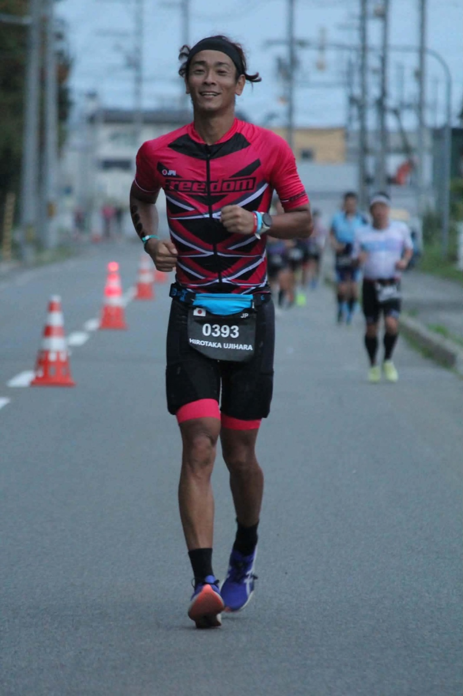
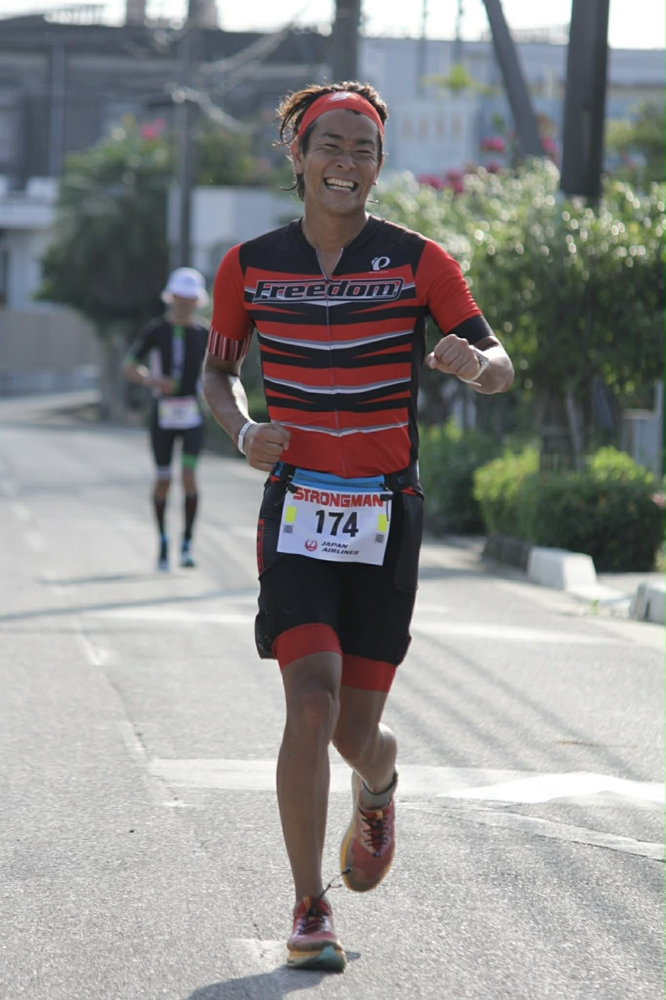
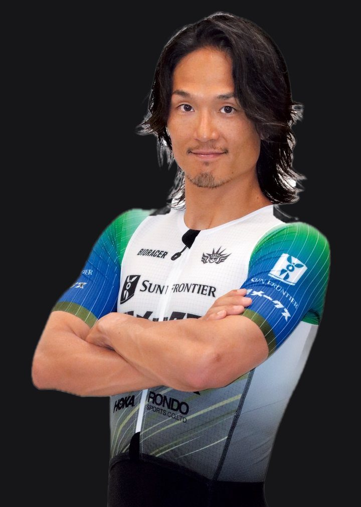
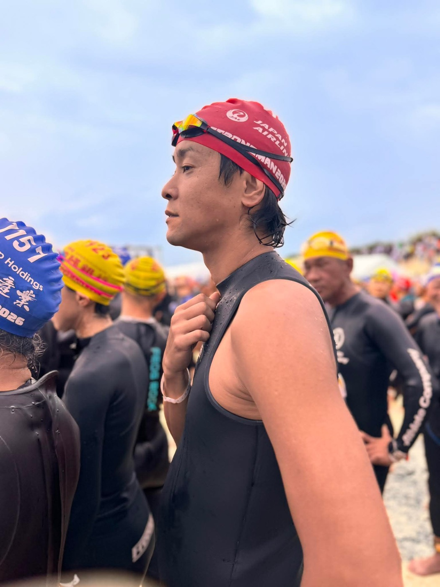
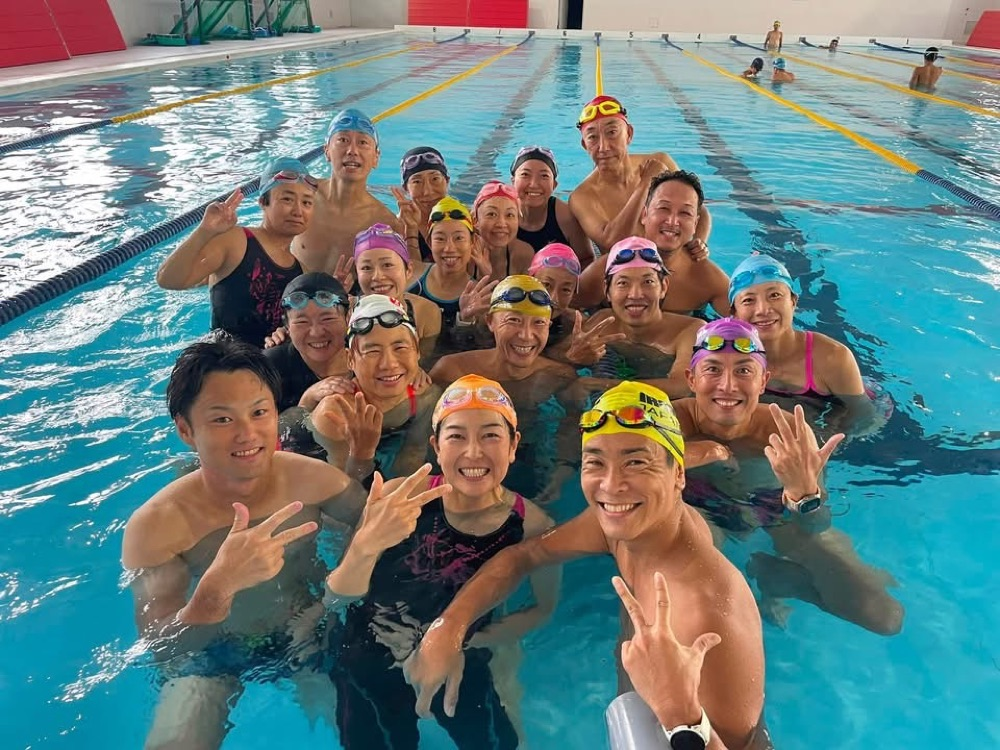
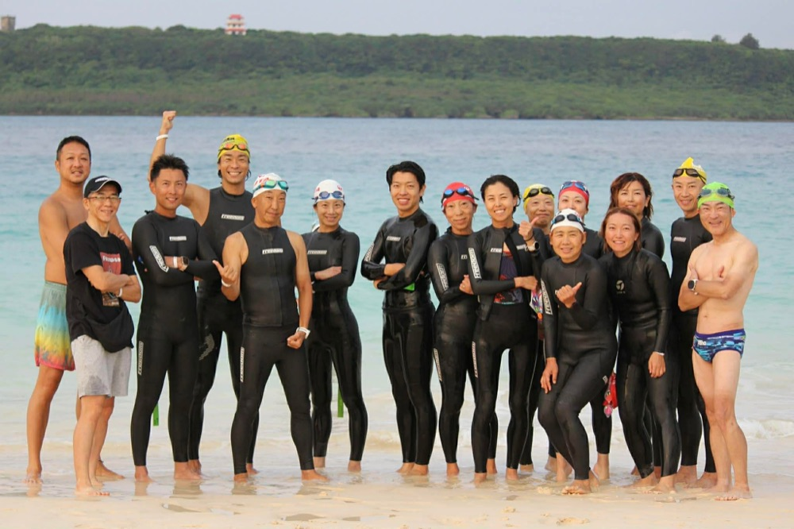

トライアスリート専門の
理学療法士
理学療法士(国家資格)として病院で7年勤務した後、整体院を開業。現在11年目。その経験を、トライアスリートの体に向けています。

3種目を長時間走り抜く体を、
姿勢と動きから読み解く。
トップトライアスリート 古谷純平選手 推薦
(対談動画あり)
Check
トライアスロンは、スイム・バイク・ランの3種目を長時間続ける競技です。一つひとつは小さな動きのズレや、小さなストレスでも、それが積み重なることで体には大きな負担になります。
痛い所は「結果」であって、
「原因」ではないことが多い。
Approach
揉む・緩めるは、あくまで通過点です。
なぜその筋肉が硬くなったのか。なぜその部位に負担がかかったのか。それを立ち姿勢や動きから読み解き、原因にさかのぼってアプローチします。
Reasons
理学療法士(国家資格)として病院で7年勤務した後、整体院を開業。現在11年目。その経験を、トライアスリートの体に向けています。

3種目を長時間やり続ける体の感覚を、自分の実体験として知っています。
アイアンマン・ジャパン南北海道
2024・2025・2026 3年連続完走
エクシアクリニック東京・真弓絵里子院長と連携。分子栄養学・血液検査の観点を取り入れ、体の外側と内側からトータルにケアします。
Interview

古谷純平 選手
プロトライアスリート「2016年から両足のアキレス腱の痛みが出たり出なかったりというのが続いていて」
── 対談より
古谷純平選手 × 氏原大貴 対談(約6分)
自分の体には自分の癖がすごく出ていて、どういう癖があるかは自分一人ではなかなか気づけません。アイアンマンで大事なのは、いかにエネルギーを使わずに効率の良い動きを作るか。筋肉ばかりに頼ってスイム・バイク・ランをやっているようでは最後まで持たない。『骨の配列が大事』ということを教えていただきました。そういったアプローチを取られていない方は、ぜひ氏原さんのケアを受けて、人間が本来あるべき姿から見直していくと、パフォーマンス向上につながるんじゃないかと思います
── 古谷純平選手(プロトライアスリート)
「今までは痛みが出たら、それを抑えるために物療でケアするのがメインでした。氏原さんのケアはちょっと違って、『根本的にここが原因になっているから、こういうアプローチをしていく』というところがすごく新鮮で。施術を受けた後は、立ち姿勢一つとっても自分の中のフィーリングがすごく変わりました」
── 古谷純平選手
「自分の癖で骨盤が前に行っているのが身についていて、自覚がありませんでした。骨盤の位置を一つずらすだけで『骨でバランスをとって姿勢を作っている』という感覚が分かってから、本来あるべき骨盤の位置に戻してからアクティベートすることで、片足立ちのバランス感覚が本当に劇的に変わりました」
── 古谷純平選手
※個人の感想です。効果を保証するものではありません。
First Session
競技歴、今後のレース予定、痛みの経過をうかがいます。
立ち姿勢と動きを見て、体の使い方の癖を確認します。
なぜその部位に負担がかかっているのか、考えられる原因をご説明します。
施術に加え、ご自身でできる動作の修正・セルフケアをお伝えします。必要に応じて医師連携もご案内します。
所要時間 90分仮
Medical Partner
クリニックでの検査・診療費用は整体の料金とは別です。パッケージのご用意もあります。詳細はクリニックのご案内によります。
Profile

氏原 大貴理学療法士(国家資格)
痛い所を揉みほぐす、筋肉を緩める。それだけで終わらせず、なぜその筋肉が硬くなったのか、なぜその部位に負担がかかったのかを、姿勢や動きから読み解く力を大切にしています。
トライアスロンは3種目を長時間行う競技です。小さな動きの積み重ね、小さなストレスの積み重ねが、大きな負担につながります。だからこそ原因探求にこだわります。
筋肉・姿勢に加えて、分子栄養学・血液検査を医師と連携して取り入れ、体の内側と外側からトータルにケアします。
仲間と、日々の練習を重ねています。


Price & Access
FAQ
はい、受けていただけます。姿勢や動きの癖の確認、レースに向けたコンディショニングを目的に来られる方もいらっしゃいます。
痛い所を揉む・緩めることを目的にはしていません。立ち姿勢や動作を評価し、なぜその部位に負担がかかっているのかの仮説をご説明したうえで、施術と、ご自身でできる動作の修正・セルフケアをお伝えします。
ご相談ください。レースまでの期間によって、確認・調整する内容が変わります。予約の際に、レースの日程をお知らせください。
必須ではありません。必要に応じて、連携先のエクシアクリニック東京をご案内します。
保険は使えません。自費でのご提供となります。
立ち姿勢や動きを確認するため、動きやすい服装でお越しください。詳細はご予約時にご案内します。
Contact
まずは初回相談で、あなたの姿勢と動きを見せてください。